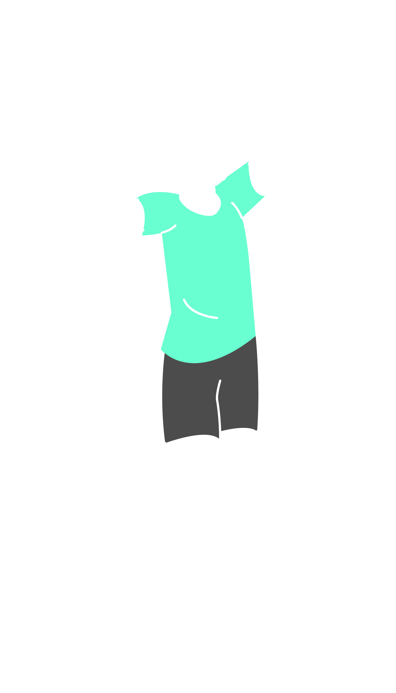

All actions which direct the ball towards the opponent, with the exception of service and block, are considered attack hits.
During an attack hit, tipping is permitted only if the ball is cleanly hit, and not caught or thrown.
An attack hit is completed at the moment the ball completely crosses the vertical plane of the net or is touched by an opponent.
Restrictions
A front-row player may complete an attack hit at any height, provided that the contact with the ball has been made within the player's own playing space.
A back-row player may complete an attack hit at any height from behind the front zone:
at his/her take-off, the player's foot (feet) must neither have touched nor crossed over the attack line;
after his/her hit, the player may land within the front zone.
A back-row player may also complete an attack hit from the front zone if at the moment of the contact a part of the ball is lower than the top of the net.
No player is permitted to complete an attack hit on the OPPONENT’S service when the ball is in the front zone and entirely higher than the top of the net.

Faults
A player hits the ball within the playing space of the opposing team.
A player hits the ball “out”.
A back-row player completes an attack hit from the front zone if at the moment of the hit the ball is entirely higher than the top of the net.
A player completes an attack hit on the opponent's service when the ball is in the front zone and entirely higher than the top of the net.
A Libero completes an attack hit if at the moment of the hit the ball is entirely higher than the top of the net.
A player completes an attack hit from higher than the top of the net when the ball is coming from an overhand finger pass by a Libero in his/ her front zone.
Blocking
Characteristics
Blocking is the action of players close to the net to intercept the ball coming from the opponent by
reaching higher than the top of the net, regardless of the height of the ball contact.
Only front-row players are permitted to complete a block, but at the moment of contact with the ball, a part of the body must be higher than the top of the net.
A block attempt is an action of blocking without touching the ball.
A block is completed whenever the ball is touched by a blocker.
A collective block is executed by two or three players close to each other and is completed when one of them touches the ball.
Consecutive (quick and continuous) contacts with the ball may occur by one or more blockers, provided that the contacts are made during one action.
In blocking, the player may place his/her hands and arms beyond the net, provided that this action does not interfere
with the opponent’s play. Thus, it is not permitted to touch the ball beyond the net before an opponent has executed an attack hit.
A block contact is not counted as a team hit. Consequently, after a block contact, a team is entitled to three hits to return the ball.
The first hit after the block may be executed by any player, including the one who has touched the ball during the block.
Blocking an opponent's service is forbidden.
Faults:
The blocker touches the ball in the Opponent’s space before the opponent’s attack hit.
A back-row player or a Libero completes a block or participates in a completed block.
Blocking the opponent’s service.
The ball is sent “out” off the block.
Blocking the ball in the opponent’s space from outside the antenna.
A Libero attempts an individual or collective block.